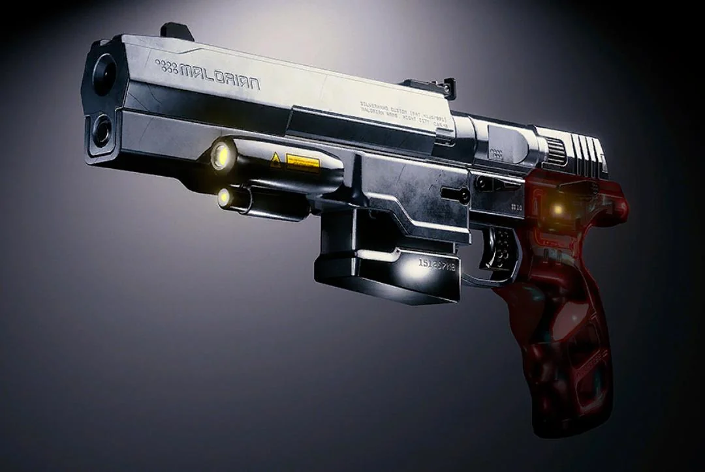
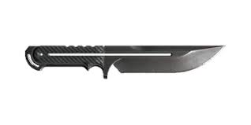
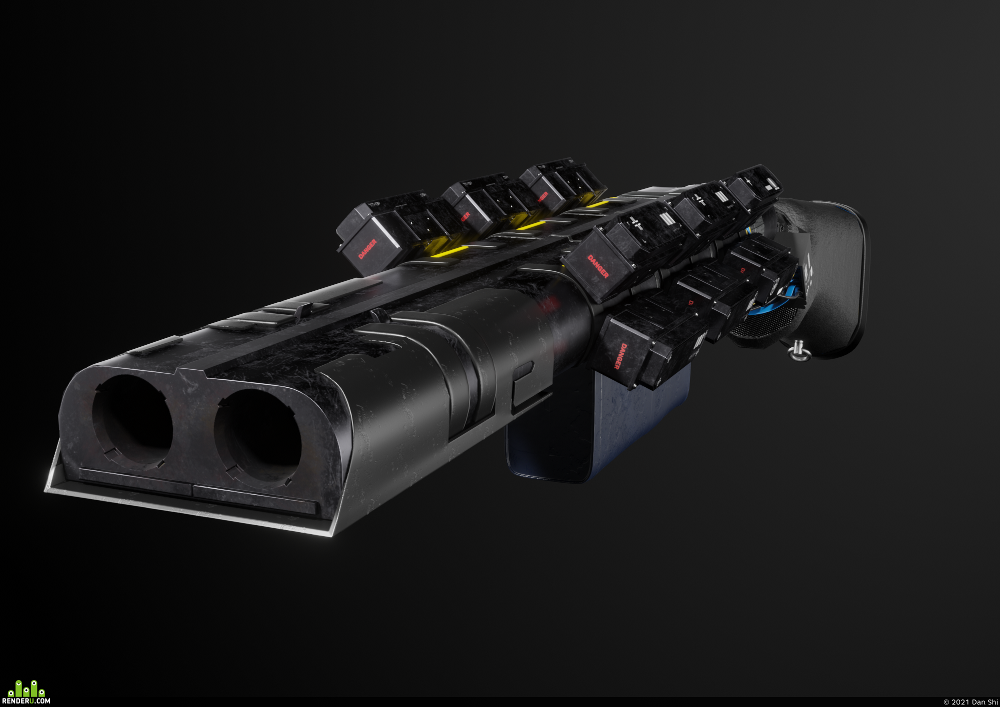
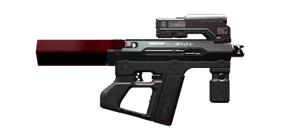
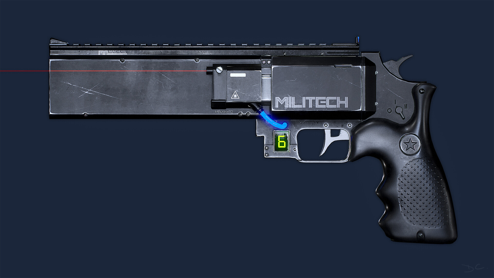

On this page I will be discussing the range of weaponry that I would use during a play through of Cyberpunk 2077
I games like cyberpunk where the combat is semi fast paced and somewhat challenging I like to use pistols, Knives/Throwable Weapons and shotguns or submachine guns.
This selection of weaponry gives us a wide range of abilities to work with while we deal with our daily merc biz.
There is also cybernetic enhancements that you can buy from the many ripperdoc surgeons around Night City my favourite is the Sandevistan, this is a cybernetic spine that speeds up the users perception and reaction times almost 10 fold, something this powerful has drawbacks, Overuse of cybernetic enhancements can lead to the body breaking down because of the physical and mental strain caused by these enhancements.





An arsenal of weapons like this allows for many approaches towards missions, it allows for a stealth whilst also being consistent with damage and damage per second.
I prefer an approach where I can have choices of how best to complete the task on hand.
I would approach a stealth situation in a similar way to the person in this video